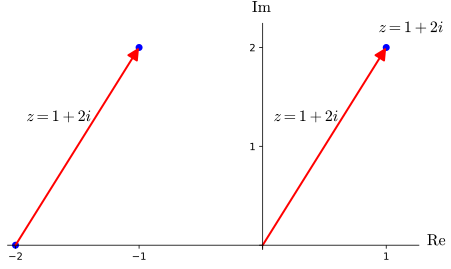
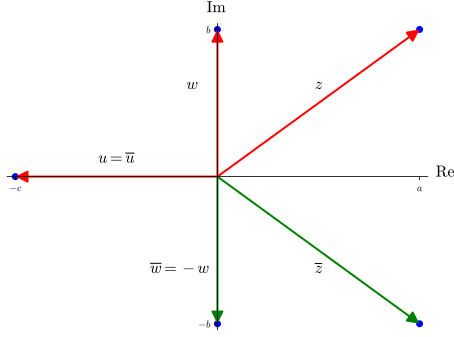

Before interpreting this operation geometrically, we first recall that there are two distinct ways of visualizing a pair \((a,b)\in \R^2\text{:}\) either as a point \(P=(a,b)\text{,}\) or as an arrow (or directed line segment) \(\overrightarrow{QR}\) starting at some initial point \(Q=(c,d)\) of your choosing and ending at the terminal point \(R=(c+a,d+a)\text{.}\) This multitude of representations carries over to our visualization of complex numbers \(z=a+ib\text{.}\) Below you see three different complex plane representations of the complex number \(z=(1,2)\text{:}\) as the point \(P=(1,2)\text{,}\) as the arrow \(\overrightarrow{OP}\) from \(O=(0,0)\) to \(P\text{,}\) and as the arrow \(\overrightarrow{QR}\) from \(Q=(-2,0)\) to \(R=(-2+1,0+2)=(-1,2)\text{.}\) Observe how the placement of our label \(z=a+ib\) varies depending on whether we consider \(z\) as a point or an arrow.

Figure1.2.1.Different visualizations of \(z=1+2i\)
The geometric interpretation of vector addition in \(\R^2\) (and hence complex addition) makes use of this arrow representation of pairs. In more detail, given pairs \((a,b)\) and \((c,d)\text{,}\) we pick any initial point \(P=(x_0,y_0)\text{,}\) then write \((a,b)=\overrightarrow{PQ}\) and \((c,d)=\overrightarrow{QR}\text{,}\) where
The definition of the modulus of a complex number \(z=a+ib\text{,}\) has a clear connection with our various visualizations of \(z\text{:}\) it is the length of any arrow representation of \(z\text{;}\) or equivalently, the distance between \(O=(0,0)\) and \(P=(a,b)\text{;}\) or equivalently, the norm \(\norm{\boldv}\) of \(\boldv=(a,b)\text{,}\) thinking of \((a,b)\) as a vector.
Definition1.2.2.Complex modulus.
The modulus (or absolute value) of a complex number \(z=a+ib\text{,}\) denoted \(\abs{z}\text{,}\) is defined as
If \(\abs{z}=1\text{,}\) we say that \(z\) has unit length.
For \(z=1+2i\text{,}\) we have \(\abs{z}=\sqrt{1^2+2^2}=\sqrt{5}\text{,}\) which is precisely the length of the various arrow representations of \(z\text{.}\)
Figure1.2.3.Visualizing the modulus of \(z=1+2i\)
Remark1.2.4.Complex numbers of unit length.
Observe that \(z=a+ib\) is a complex number of unit length if and only if the point \((a,b)\) lies on the unit circle \(S^1: x^2+y^2=1\text{.}\) Thus we obtain the following nifty complex description of the unit circle:
How do we interpret \(\abs{z-w}\) for complex numbers \(z=a+ib\) and \(w=c+id\text{?}\) Let’s unpack things: we can visualize \(z-w\) as the arrow \(\overrightarrow{QP}\) from \(Q=(c,d)\) to \(P=(a,b)\text{,}\) and thus \(\abs{z-w}\) is just the length of this arrow. Equivalently, \(\abs{z-w}\) is the distance between \(P\) and \(Q\text{.}\)
Example1.2.6.Circles and discs.
Define \(C=\{z\in\C \colon \abs{z-(i+1)}=2\}\) and \(D=\{z\in \C\colon \abs{z-(1+i)}\leq 2\}\text{.}\) Sketch the sets \(C\) and \(D\) in the complex plane, and give identify them as familiar geometric objects.
Solution.
Using the observation from Remark 1.2.5, we see that \(C\) is the set of points whose distance to \((1,1)\) is \(2\text{,}\) while \(D\) is the set of points whose distance to \((1,1)\) is at most 2. Geometrically, \(C\) is the circle of radius \(2\) centered at \((1,1)\) and \(D\) is the closed disk of radius 2 centered at \(2\text{:}\) i.e.,
\begin{align*}
C \amp\colon (x-1)^2+(y-1)^2=4 \amp D\amp\colon (x-1)^2+(y-1)^2\leq 4 \text{.}
\end{align*}
Since \(\abs{z}\) is the same thing as \(\norm{(a,b)}\) for a complex number \(z=a+ib\text{,}\) we obtain lots of useful properties of the complex modulus essentially for free from elementary linear algebra facts about the norms of vectors. This is the case for all of the statements in the following theorem, save the last one.
Theorem1.2.7.Modulus properties.
Let \(z\) and \(w\) be complex numbers.
Positivity.
\(\abs{z}\geq 0\text{,}\) and \(\abs{z}=0\) if and only if \(z=0\text{.}\)
Triangle inequality.
\(\abs{z+w}\leq \abs{z}+\abs{w}
\text{.}\)
Triangle inequality variation.
\(\abs{z-w}\geq \abs{\abs{z}-\abs{w}}
\text{.}\)
Components modulus.
\(\abs{\Re z}\leq \abs{z}\) and \(\abs{\Im z}\leq \abs{z}\text{.}\)
Multiplicative property.
\(\abs{zw}=\abs{z}\abs{w}\text{.}\)
Proof.
As mentioned above, all but the last statement follow directly from elementary linear algebra facts. We give a proof of statement (5). Letting \(z=a+ib\) and \(w=c+di\text{,}\) we have
One important difference between \(\R\) and \(\C\) is that the former is equipped with the \(\leq\) relation, and that this relation does not extend to \(\C\) in a useful way. Since we now think of \(\R\subseteq \C\) as a subset of \(\C\text{,}\) however, we will still have occasion to make assertions about real complex numbers that involve \(\leq\text{.}\) As such, whenever we state something of the form \(x \leq y\text{,}\) both \(x\) and \(y\) are understood to be real complex numbers.
Remark1.2.9.Sums of squares.
The multiplicative property of the modulus gives rise to an elegant proof of the following fact about integers: if \(p\) and \(q\) are integers that can be expressed as the sum of two square integers, then \(pq\) can be written as the sum of two square integers. For example, we have \(5=1^2+2^2\text{,}\)\(13=2^2+3^2\text{,}\) and
This fact, known variously as the Brahmagupta identity, Fibonacci identity, and Brahmagupta-Fibonacci identity, was known to mathematicians since Diophantus. A proof using the complex modulus was given by Euler in the 18th century. Try and prove it yourself in this manner.
SubsectionComplex conjugation
We now introduce complex conjugation, which like the modulus operation has a strong connection to the geometry of the complex plane.
Definition1.2.10.Complex conjugation.
Given the complex number \(z=a+ib\text{,}\) its (complex) conjugate \(\overline{z}\) is defined as
What is the geometric relationship between \(z=a+ib\) and \(\overline{z}=a-ib\text{?}\) Identifying \(z\) with the point \((a,b)\) and \(\overline{z}\) with the point \((a,-b)\text{,}\) we see that \(\overline{z}\) can be thought of as the reflection of \(z\) through the \(x\)-axis. In other words, the operation of complex conjugation corresponds to reflection through the \(x\)-axis.

Figure1.2.11.Conjugation as reflection
You are likely wondering why reflection through the \(x\)-axis would prove to be useful when considered as an operation on complex numbers. The next theorem is a form of answer to this question, as it illustrates how reflection (i.e., conjugation) respects the other complex operations, including our new friend the modulus.
for some \(r,\theta\in \R\text{,}\) and we call \(r\) and \(\theta\)polar coordinates of the point \((a,b)\) in this case. These polar coordinates are not unique, but we do have the following fact: if \((a,b)\) is nonzero, and we have
with \(r\geq 0\) and \(s\geq 0\text{,}\) then \(r=s=\sqrt{a^+b^2}\) and \(\psi=\theta+2\pi k\) for some integer \(k\in \Z\text{.}\) This leads directly to the following result about complex numbers.
We call the expression \(r(\cos\theta+i\sin\theta)\) a polar form of \(z\) and we call \(\theta\) an argument of \(z\text{.}\)
If \(z\ne 0\text{,}\) we define \(\Arg z\) to be the unique \(\theta\in (-\pi, \pi]\) satisfying (1.6), and we define \(\arg z\) to be the set of all arguments of \(z\text{.}\) Equivalently,
Remark1.2.17.Geometric interpretation of complex operations.
Each of the identities of Theorem 1.2.16 can be understood as providing a geometric interpretation of one of our complex operations.
In particular, statement (3) provides us with a more satisfying description of complex multiplication than the algebraic formula given by (1.3). Roughly speaking, the identity (1.9) tells us that to multiply two complex numbers, we (a) add their arguments and (b) multiply their moduli.
Alternatively, (1.9) tells us that to multiply \(w=s(\cos\psi+i\sin\psi)\) by \(z=r(\cos\theta+i\sin\theta)\text{,}\) we (a) rotate \(w\) (considered as a point) by an angle \(\theta\) about the origin, and (b) scale its distance from the origin by \(r\text{.}\)
Similarly, (1.10) tells us that the inverse of a complex number is obtained by taking the reciprocal of its modulus (the \(1/r\) in the formula), and “flipping” its argument (the \(-\theta\) in the formula).
Example1.2.18.Polar form arithmetic.
Let \(z=-1+\sqrt{3}i\) and \(w=1-i\text{.}\) Compute the following complex numbers. Your answer should be expressed in polar form.
\(zw\text{.}\)
\(z/w\text{.}\)
Solution.
Remark1.2.19.Multiplication by elements of \(S^1\).
Recall that we can identify the unit circle \(S^1\) as the set of all complex numbers of unit length: i.e.,
for some \(\theta\in \arg z\text{.}\) It follows from our geometric description of complex multiplication that multiplication by \(z\) is the same thing as rotation by \(\theta\) about the origin. This is a surprising (and useful) connection between a geometric operation on \(\R^2\) (rotation by \(\theta\)), and an algebraic operation on \(\C\) (multiplication by \(z\)).
In more detail, we have the following complex-algebraic description of rotation by the angle \(\theta\text{:}\)
set \(z_\theta=\cos\theta+i\sin\theta\text{;}\)
given point \((a,b)\in \R^2\text{,}\) let \(w=a+ib\text{;}\)